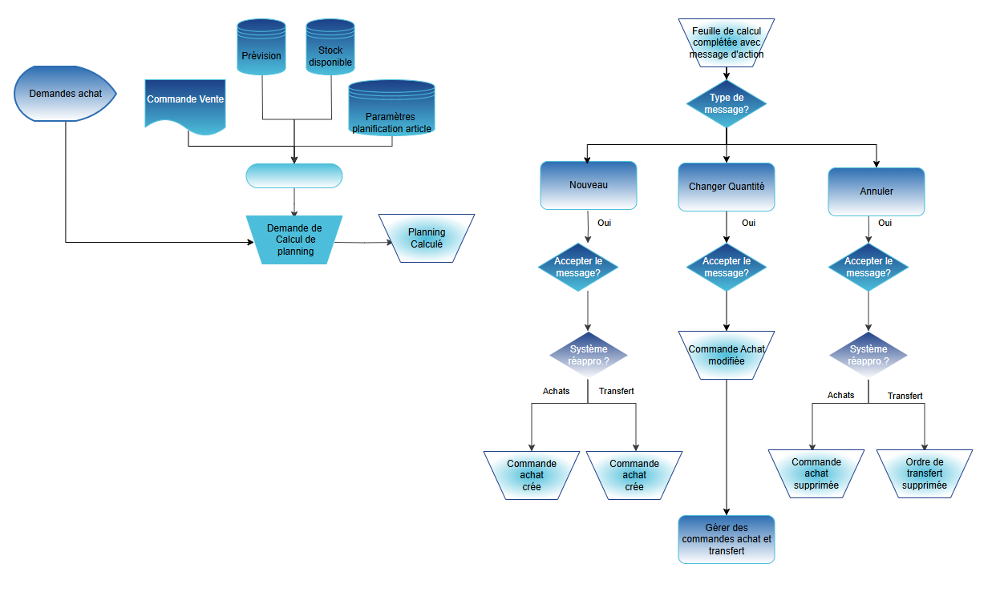
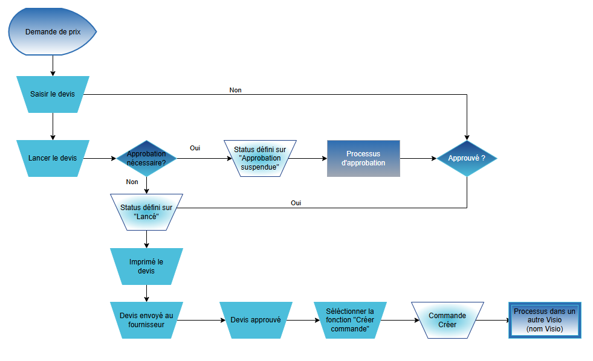

Fiche d'Aide à la Décision
FAD
-
DOCUMENT D’ANALYSE FONCTIONNEL
-
FUNCTIONAL ANALYSIS DOCUMENT
Processus Achat
Microsoft Business Central

- ANAL

Sommaire
4. Traitement d‘une livraison directe 6
5. Saisie d’une demande de prix 7
6. Saisie d’une commande cadre 8
7. Saisie d’une commande d‘achat 10
8. Saisie d’un retour d’une commande achat 12
11. Annexe 1 : Liste d‘écarts 16
Ce document liste l’analyse fonctionnel sur les processus métier du client concernant le domaine des achats. Les principaux objectifs de l’analyse fonctionnel sont :
- Visiter les sites clients comme les usines, entrepôts et/ou bureaux
- Conduire des ateliers orientés processus.
- Ne pas rentrer en profondeur sur les fonctionnalités de l’ERP ni faire de démonstrations
- Comprendre la façon de travailler actuelle, les points faibles et les attentes globales et futures
- Identifier les écarts critiques et les interfaces qui peuvent avoir un impact sur le projet
- Identifier les volumes des référentiels et données transactionnelles
- Confirmer le périmètre fonctionnel, technique, géographique et organisationnel du projet
- Identifier un jeu de donnée nécessaire pour l’ERP pour mieux préparer les ateliers de démonstration.
Ce document a été préparé sur la base d‘atelier(s) réalisés avec les membres de l'équipe de projet suivants :
Atelier | Date | Lieu | Almakom | Client |
1er atelier | … | … | Nom et Prénom | Nom et Prénom |
2ème atelier | … | … | Nom et Prénom | Nom et Prénom |
Versions du document
Version | Date | Description | Ecrit par | Approuvé par |
Draft | JJ/MM/AAAA | Draft | Nom et Prénom | Nom et prénom |
… | JJ/MM/AAAA | … | … | … |
Membre de l‘équipe | Fonction | |
Nom et Prénom | … | … |
Nom et Prénom | … | … |
Les processus standards ERP qui font partie des ateliers d’analyse sur les achats sont :

3 Planification
3.1. Contexte et Hypothèses
[INFORMATION MANQUANTE]
Les hypothèses qui peuvent avoir un impact sur le projet doivent être indiquées.
3.2. Schéma des processus ERP : Planification 1.0

3.3. Principales règles de gestion
[INFORMATION MANQUANTE]
3.4. Documents et statistiques
[INFORMATION MANQUANTE]
3.5. Volume des données
[INFORMATION MANQUANTE]
3.6. Écarts critiques et interfaces
[INFORMATION MANQUANTE]
Ces écarts et interfaces doivent être initialisés dans la liste des écarts délivrée qui doit être finie à la fin de la phase d’Analyse.
4 Traitement d‘une livraison directe
4.1. Contexte et Hypothèses
**Contexte et hypothèses du processus de traitement d'une livraison directe**
**Situation actuelle :**
Le processus de traitement d'une livraison directe est actuellement manuel et nécessite une réception physique des colis, suivie d'un processus de "incoming" pour contrôler et réceptionner la livraison. Les instructions d'incoming sont données par le chef de projet, et les certificats sont gérés par la Qualité Contrôle. Cependant, il n'y a pas de document d'entrée en stock, ce qui rend difficile pour le chef de projet de se rendre compte si les pièces sont reçues ou si pas encore contrôlées.
**Points critiques :**
* La difficulté de savoir où se trouve le colis physique
* Le processus de "incoming" qui nécessite une réception physique et un contrôle qualité
* La gestion des certificats qui dépend du projet
* L'absence de document d'entrée en stock
**Attentes client :**
* Un processus de traitement d'une livraison directe automatisé et efficace
* Une réception et un contrôle qualité rapides et précis
* Une gestion des certificats adaptée aux besoins du projet
* Un document d'entrée en stock pour suivre les pièces reçues
**Hypothèses :**
* La présence d'un système de gestion de stock (Gestion de stock) pour suivre les pièces en stock
* La possibilité de paramétrer les fournisseurs préférés
* La présence d'un tableau de bord adapté au profil de l'utilisateur pour suivre les informations pertinentes
* La possibilité d'exporter les données dans Excel
**Remarques :**
* Il est important de noter que la catégorisation des fournisseurs est possible, mais il faudra voir si on peut trouver une source possible de cette catégorisation (via Catya ?)
* La gestion de l'incoterm est importante pour suivre les dates d'expédition
* La gestion des Work-Packages est importante pour suivre les coûts et les dates du projet
Les hypothèses qui peuvent avoir un impact sur le projet doivent être indiquées.
4.2. Schéma des processus ERP : Traitement d’une livraison directe 2.0

4.3. Principales règles de gestion
[INFORMATION MANQUANTE]
4.4. Documents et statistiques
[INFORMATION MANQUANTE]
4.5. Volume des données
[INFORMATION MANQUANTE]
4.6. Écarts critiques et interfaces
[INFORMATION MANQUANTE]
Ces écarts et interfaces doivent être initialisés dans la liste des écarts délivrée qui doit être finie à la fin de la phase d’Analyse.
5.1. Contexte et Hypothèses
**Processus de saisie des demandes de prix**
**Contexte et hypothèses**
Le processus de saisie des demandes de prix est un processus clé dans l'atelier Achats d'Almatech. Il consiste à gérer les demandes de prix pour les achats de pièces et de services nécessaires pour les projets.
**Fonctionnement actuel**
Actuellement, le processus de saisie des demandes de prix est basé sur les trois types d'achats suivants :
1. Offres (devis) : les achats de pièces et de services nécessaires pour les projets sont soumis à des offres fournisseurs.
2. Projets (demande d'achat) : les achats de pièces et de services nécessaires pour les projets sont gérés à l'aide de demandes d'achat.
3. Achats génériques société (licences, ordinateurs...) : les achats de pièces et de services génériques sont gérés à l'aide de demandes d'achat.
Les utilisateurs peuvent saisir des demandes de prix en utilisant la fonctionnalité "Purchase quote" (demande d'offre) qui permet de rentrer les offres fournisseurs et de les lier aux projets.
**Difficultés rencontrées**
Les difficultés rencontrées par les utilisateurs sont les suivantes :
* La gestion des certificats par la Qualité Contrôle est complexe et nécessite une grande attention.
* La réception des pièces est difficile à gérer, notamment en ce qui concerne la localisation des colis et la gestion des Non Conformités (NC).
* La gestion des petites commandes est complexe et nécessite une grande attention.
* La chaîne d'approbation est complexe et nécessite une grande attention.
**Attentes du client**
Les attentes du client sont les suivantes :
* Une gestion efficace des demandes de prix pour les achats de pièces et de services nécessaires pour les projets.
* Une gestion efficace des certificats par la Qualité Contrôle.
* Une gestion efficace de la réception des pièces.
* Une gestion efficace des petites commandes.
* Une chaîne d'approbation efficace.
**Hypothèses**
Les hypothèses qui peuvent avoir un impact sur le projet sont les suivantes :
* La mise en place d'une gestion efficace des demandes de prix pour les achats de pièces et de services nécessaires pour les projets.
* La mise en place d'une gestion efficace des certificats par la Qualité Contrôle.
* La mise en place d'une gestion efficace de la réception des pièces.
* La mise en place d'une gestion efficace des petites commandes.
* La mise en place d'une chaîne d'approbation efficace.
Les hypothèses qui peuvent avoir un impact sur le projet doivent être indiquées.
- Schéma des processus ERP : Demande de prix 3.0

5.3. Principales règles de gestion
[INFORMATION MANQUANTE]
5.4. Documents et statistiques
[INFORMATION MANQUANTE]
5.5. Volume des données
[INFORMATION MANQUANTE]
5.6. Écarts critiques et interfaces
[INFORMATION MANQUANTE]
Ces écarts et interfaces doivent être initialisés dans la liste des écarts délivrée qui doit être finie à la fin de la phase d’Analyse.
6.1. Contexte et Hypothèses
**Contexte et Hypothèses**
Le processus de saisie d'une commande cadre dans l'atelier Achats de l'entreprise Almatech est complexe et implique plusieurs hypothèses qui peuvent avoir un impact sur le projet. Voici la situation actuelle, les points critiques et les attentes client :
**Situation actuelle**
L'entreprise Almatech utilise trois types d'achats : offres (devis), projets (demande d'achat) et achats génériques société (licences, ordinateurs...). Les achats sont mutualisés multi-projet et peuvent être réalisés sous trois options : "industrielle", "spécifique" et "spécifique optimisée". La réception des pièces est un processus à revoir, notamment en ce qui concerne la difficulté de savoir où se trouve le colis et le processus de "incoming" qui nécessite la présence du chef de projet.
**Points critiques**
Les points critiques du processus sont les suivants :
* La difficulté de savoir où se trouve le colis et le processus de "incoming" qui nécessite la présence du chef de projet.
* La gestion des certificats par la Qualité Contrôle, qui n'est pas nécessaire pour toutes les pièces.
* Les petites commandes qui nécessitent une chaîne d'approbation avec un seuil dépendant de la personne qui passe la commande ou du risque sur la commande.
* La gestion du multi-sourcing, y compris la référence fournisseur et le paramétrage du fournisseur préféré.
* Les informations de planning, telles que le lead-time, le stock de sécurité, le Minimum Order Quantity, y compris les vacances des fournisseurs et des transporteurs.
**Attentes client**
Les attentes client sont les suivantes :
* Un tableau de bord adapté au profil pour l'utilisateur avec les informations pertinentes.
* Un export facile dans Excel.
* La gestion du multi-sourcing, y compris la référence fournisseur et le paramétrage du fournisseur préféré.
* Les informations de planning, telles que le lead-time, le stock de sécurité, le Minimum Order Quantity, y compris les vacances des fournisseurs et des transporteurs.
**Hypothèses**
Les hypothèses qui peuvent avoir un impact sur le projet sont les suivantes :
* La nécessité de revoir le processus de réception des pièces.
* La difficulté de savoir où se trouve le colis et le processus de "incoming" qui nécessite la présence du chef de projet.
* La gestion des certificats par la Qualité Contrôle, qui n'est pas nécessaire pour toutes les pièces.
* Les petites commandes qui nécessitent une chaîne d'approbation avec un seuil dépendant de la personne qui passe la commande ou du risque sur la commande.
* La gestion du multi-sourcing, y compris la référence fournisseur et le paramétrage du fournisseur préféré.
* Les informations de planning, telles que le lead-time, le stock de sécurité, le Minimum Order Quantity, y compris les vacances des fournisseurs et des transporteurs.
Les hypothèses qui peuvent avoir un impact sur le projet doivent être indiquées.
6,2, Schéma des processus ERP : Saisie d’une commande cadre 4.0

6.3. Schéma des processus ERP : Saisie d’une commande d’achat

6.4. Principales règles de gestion
[INFORMATION MANQUANTE]
6.5. Documents et statistiques
[INFORMATION MANQUANTE]
6.6. Volume des données
[INFORMATION MANQUANTE]
6.7. Écarts critiques et interfaces
[INFORMATION MANQUANTE]
Ces écarts et interfaces doivent être initialisés dans la liste des écarts délivrée qui doit être finie à la fin de la phase d’Analyse (après la phase d'Analyse fonctionnel).
7 Saisie d’une commande d‘achat
7.1. Contexte et Hypothèses
**Contexte du processus de saisie des commandes d'achat**
Le processus de saisie des commandes d'achat est un processus clé dans l'atelier Achats d'Almatech. Il consiste à gérer les commandes d'achat pour les différents types de projets, y compris les achats génériques de la société. Le processus est influencé par les deux options "industrielle" et "spécifique", ainsi que la catégorisation des fournisseurs.
**Points critiques**
Les points critiques du processus sont :
* La réception des pièces, qui nécessite un processus de réception à revoir, notamment pour savoir où se trouve le colis.
* La gestion des certificats par la Qualité Contrôle, qui nécessite une attention particulière pour les pièces de vol.
* La chaîne d'approbation, qui dépend du seuil et de l'approbation par un groupe d'approbateurs.
* La gestion du multi-sourcing, y compris la référence fournisseur et le paramétrage du fournisseur préféré.
* La catégorisation des fournisseurs, qui nécessite une source possible de catégorisation (via Catya).
**Attentes du client**
Les attentes du client sont :
* Un tableau de bord adapté au profil pour l'utilisateur avec les informations pertinentes.
* Un export facile dans Excel.
* Une gestion du multi-sourcing, y compris la référence fournisseur et le paramétrage du fournisseur préféré.
* Des informations de planning, y compris le lead-time, le stock de sécurité, le Minimum Order Quantity, ainsi que les vacances des fournisseurs et transporteurs.
* Une catégorisation possible des fournisseurs.
**Hypothèses**
Les hypothèses qui peuvent influencer le projet ou l'analyse sont :
* La nécessité de réviser le processus de réception des pièces.
* La nécessité de gérer les certificats par la Qualité Contrôle.
* La nécessité de catégoriser les fournisseurs.
* La nécessité de paramétrer le fournisseur préféré.
* La nécessité de gérer les informations de planning.
**Conclusion**
Le processus de saisie des commandes d'achat est un processus complexe qui nécessite une attention particulière pour les points critiques et les attentes du client. Les hypothèses qui peuvent influencer le projet ou l'analyse doivent être prises en compte pour garantir une mise en œuvre efficace du processus.
Les hypothèses qui peuvent avoir un impact sur le projet doivent être indiquées.
7.2 Schéma des processus ERP : Saisie d’une commande d’achat

7.3. Principales règles de gestion
[INFORMATION MANQUANTE]
7.4. Documents et statistiques
[INFORMATION MANQUANTE]
7.5. Volume des données
[INFORMATION MANQUANTE]
7.6. Écarts critiques et interfaces
[INFORMATION MANQUANTE]
Ces écarts et interfaces doivent être initialisés dans la liste des écarts délivrée qui doit être finie à la fin de la phase d’Analyse (après la phase d'Analyse fonctionnel).
8 Saisie d’un retour d’une commande achat
8.1. Contexte et Hypothèses
**Processus de gestion des retours fournisseurs**
**Contexte et hypothèses**
Le processus de gestion des retours fournisseurs est actuellement défectueux et nécessite une révision. Les difficultés rencontrées sont les suivantes :
* La réception des pièces est complexe et nécessite une révision du processus de réception.
* La gestion des certificats est manuelle et nécessite une intervention de la Qualité Contrôle.
* Les petites commandes nécessitent une chaîne d'approbation complexe.
* La gestion du multi-sourcing et des fournisseurs est manuelle.
* La catégorisation des fournisseurs est manuelle et nécessite une source externe (Catya ?).
Les attentes et hypothèses qui peuvent impacter le projet sont les suivantes :
* La mise en place d'un processus de réception automatisé.
* La gestion des certificats automatisée.
* La simplification de la chaîne d'approbation pour les petites commandes.
* La mise en place d'une gestion du multi-sourcing et des fournisseurs automatisée.
* La catégorisation des fournisseurs automatisée.
**Objectifs**
* Simplifier le processus de gestion des retours fournisseurs.
* Améliorer la gestion des certificats.
* Simplifier la chaîne d'approbation pour les petites commandes.
* Améliorer la gestion du multi-sourcing et des fournisseurs.
* Automatiser la catégorisation des fournisseurs.
**Hypothèses**
* La mise en place d'un système de gestion des retours fournisseurs automatisé.
* La disponibilité d'une source externe (Catya ?) pour la catégorisation des fournisseurs.
* La collaboration de la Qualité Contrôle pour la gestion des certificats.
* La disponibilité d'un système de gestion de projet pour la gestion des Work-Packages.
**Risques**
* La complexité du processus de réception.
* La manque de disponibilité de la Qualité Contrôle pour la gestion des certificats.
* La complexité de la chaîne d'approbation pour les petites commandes.
* La manque de disponibilité d'une source externe (Catya ?) pour la catégorisation des fournisseurs.
**Plan d'action**
* Réviser le processus de réception.
* Mettre en place un système de gestion des certificats automatisé.
* Simplifier la chaîne d'approbation pour les petites commandes.
* Mettre en place une gestion du multi-sourcing et des fournisseurs automatisée.
* Automatiser la catégorisation des fournisseurs.
**Échéancier**
* Révision du processus de réception : 2 semaines.
* Mise en place d'un système de gestion des certificats automatisé : 4 semaines.
* Simplification de la chaîne d'approbation pour les petites commandes : 6 semaines.
* Mise en place d'une gestion du multi-sourcing et des fournisseurs automatisée : 8 semaines.
* Automatisation de la catégorisation des fournisseurs : 10 semaines.
**Ressources**
* Équipe de développement.
* Qualité Contrôle.
* Catya ? (source externe).
* Système de gestion de projet.
**Budget**
* Équipe de développement : 10 000 €.
* Qualité Contrôle : 5 000 €.
* Catya ? (source externe) : 8 000 €.
* Système de gestion de projet : 12 000 €.
Total : 35 000 €.
Les hypothèses qui peuvent avoir un impact sur le projet doivent être indiquées.
8.2. Schéma des processus ERP : Saisie d’un retour d’une commande achat 6.0

8.3. Principales règles de gestion
[INFORMATION MANQUANTE]
8.4. Documents et statistiques
[INFORMATION MANQUANTE]
8.5. Volume des données
[INFORMATION MANQUANTE]
8.6. Écarts critiques et interfaces
[INFORMATION MANQUANTE]
Ces écarts et interfaces doivent être initialisés dans la liste des écarts délivrée qui doit être finie à la fin de la phase d’Analyse.
9.1. Contexte et Hypothèses
[INFORMATION MANQUANTE]
Les hypothèses qui peuvent avoir un impact sur le projet doivent être indiquées.
9.2 Schéma des processus ERP : Rapport achat 8.0

9.3. Principales règles de gestion
[INFORMATION MANQUANTE]
9.4. Documents et statistiques
[INFORMATION MANQUANTE]
9.5. Volume des données
[INFORMATION MANQUANTE]
9.6. Ecarts critiques et interfaces
[INFORMATION MANQUANTE]
Ces écarts et interfaces doivent être initialisés dans la liste des écarts délivrée qui doit être finie à la fin de la phase d’Analyse.
10.1. Contexte et Hypothèses
[INFORMATION MANQUANTE]
Les hypothèses qui peuvent avoir un impact sur le projet doivent être indiquées.
10.2 Schéma des processus ERP : Historique achat 9.0

10.3. Principales règles de gestion
[INFORMATION MANQUANTE]
10.4. Documents et statistiques
[INFORMATION MANQUANTE]
10.5. Volume des données
[INFORMATION MANQUANTE]
10.6. Écarts critiques et interfaces
[INFORMATION MANQUANTE]
Ces écarts et interfaces doivent être initialisés dans la liste des écarts délivrée qui doit être finie à la fin de la phase d’Analyse.
11.1. Liste d’écarts
En fonction des informations fournies, la liste d'écarts sera stockée dans SharePoint.
Cette décision est basée sur le fait que les documents sources mentionnent la gestion des certificats par la Qualité Contrôle, qui est une fonctionnalité qui pourrait être intégrée à SharePoint. De plus, la possibilité de renseigner des documents, tels que des spécifications, qui devraient être gérées dans SharePoint, suggère que SharePoint est déjà utilisé pour la gestion de documents.
Il est important de noter que cette décision nécessite une vérification supplémentaire pour s'assurer que SharePoint est effectivement utilisé pour la gestion de documents et que les fonctionnalités nécessaires sont disponibles.
Indiquer l’URL où la liste des écarts sera stockée (SharePoint / Teams / DevOps / Autre).